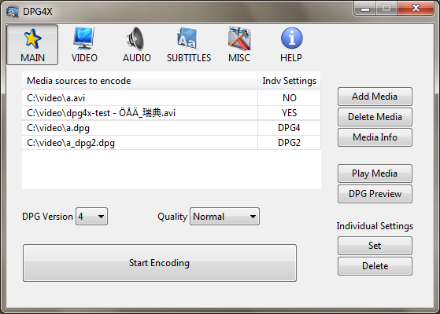
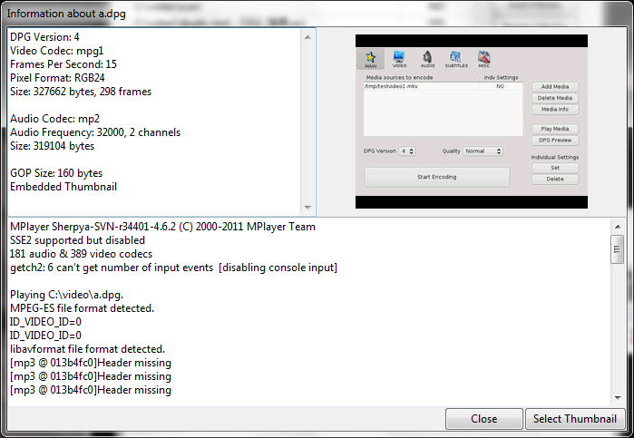
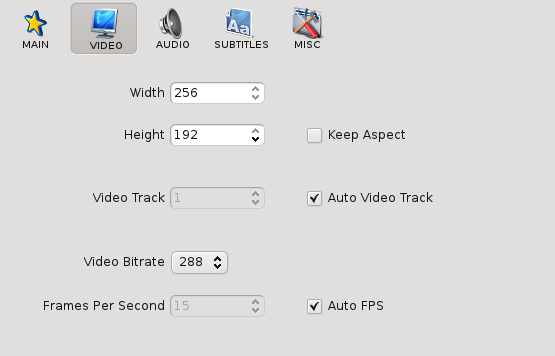
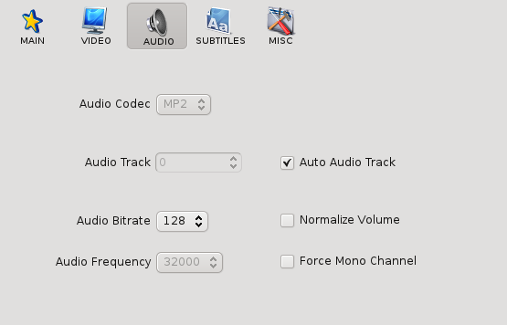
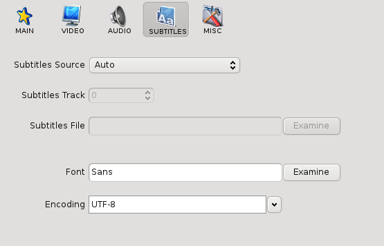
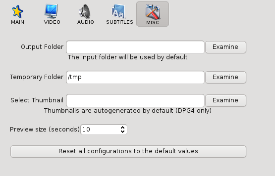

Dpg4x User Guide
From dpg4x
Contents |
The MAIN section

If you run dpg4x, the first thing that you will see is the MAIN section. You can switch from one section to another with the icon-buttons at the top.
The MAIN section includes a list, with all the media sources that you want to encode. To add a media source to the list, use the Add Media button. This will enable the Add File, Add DVD and Add VCD buttons. To delete a media source from the list, select the media and use the Delete Media button.
To add a file, just browse your file system and select it. It is also possible to add files using drag-and-drop from a file manager. To add a DVD or a VCD you need to select the track and the disc reader device. When adding a DVD, you can filter by a range of chapters. Dpg4x cannot rip a DVD, only read non encrypted tracks.
The Media Info button gathers technical information about the selected media source. This can be useful to get the available audio and video tracks.
If the source file is a DPG file, the thumbnail and more DPG header information is shown. This dialog also includes a function for replacing the thumbnail.

Start Encoding
When you have completed the list, just use the Start Encoding button. If you want to setup the options for the encoding, you can select the DPG Version and the quality that you want to use. The DPG videos will be stored in the same folder as the original video files, but you can change this behaviour in the MISC section. This is a must when you are using DVD or VCD sources.
If the source file already is a DPG file it will be converted to an AVI file without changing any video or audio streams. Encoding settings do not apply for DPG files.Preview Modes
With the Play Media and DPG Preview buttons at the MAIN section you can play the media sources before encoding.
However, they work in a different way, while on the one hand "Play Media" just plays the media source "as is" using mplayer, the DPG Preview button encodes the beginning of the video, using the encoding settings you have selected, and then plays it as a DPG-like video. This is specially useful for testing your settings and seeing what your video would be like. You can setup the length of the preview from the MISC section.
Default Settings Vs Individual Settings
When you need to adjust the encoding process to your needs, dpg4x offers two ways to configure it.
If you want your settings to be applied to all the videos you encode, you just need to switch to another section and adjust the default settings. Remember that all the sections are always available via the icon-buttons at the top.
If you want to set default settings for only one video (e.g. you may want to set a specific thumbnail or subtitles file), you can select the media source and press the Set button in the Individual Settings menu, at the bottom-right of the MAIN section. A popup window will be opened, showing the same options available in the default configuration sections, just perform the changes and press save. The default settings will no longer be used for that media source, only the settings you just set.
You can press Set again to perform another change or press Delete to delete the individual configuration for that media source. If you are not sure if a media source will use individual or default settings you can check it in the media sources list, in the MAIN section (second column).
Note: DPG files are converted to AVI without changing video/audio and do not support individual settings.
The VIDEO section

The VIDEO section includes the following video-related configurations:
- Width
- Sets the width of the video. It is fixed to 256 at the moment, because the current versions of MoonShell cannot deal with other values.
- Height
- Sets the height of the video. You can set any value between 32 and 192 or click on Keep Aspect to try to preserve the aspect ratio.
- Video Track
- Because the DPG video format cannot store more than one video track, you need to specify the track you want to encode in source videos with more than one track. If you click on Auto Video Track, the default track (usually the first) will be selected.
- Video Bitrate
- This value determines the size of the output video. If you increase this setting, you will increase the video quality of your videos, but you will need more disk space to store them and they will be slower to encode.
- Frames Per Second
- Number of frames per second stored in the output video. Most users should leave Auto FPS checked.
The AUDIO section

The AUDIO section includes the following audio-related configurations:
- Audio Codec
- Codec used to encode the audio. Ogg vorbis and GSM audio were valid options in the past, but the current versions of MoonShell (and other alternative players) do not accept them, so now you can only select MP2.
- Audio Track
- Because the DPG video format cannot store more than one audio track, you need to specify the track you want to encode in source videos with more than one track. These tracks are usually related to with the available languages in DVD sources or similar. Use the Media Info button in the MAIN section to get the available tracks.
- Audio Bitrate
- This value determines the size of the output video. If you increase this setting, you will increase the audio quality of your videos, but you will need more disk space to store them and they will be slower to encode.
- Audio Frequency
- In order to get the best compatibility with the NDS hardware, this setting must be set to 32000.
- Normalize Volume
- Check this if you want to adjust the volume of your output files to a standard level.
- Force Mono Channel
- This settings forces the encoded audio to be monaural (not stereo). It is mandatory if you select DPG version 0 in the MAIN section.
The SUBTITLES section

Use the SUBTITLES section to create DPG video files with subtitles embedded. You can select different behaviours in the Subtitles Source combo:
- Auto
- When Auto is selected as the Subtitles Source, dpg4x will try to use an external subtitles file with the same name as the video file, or the first subtitles track when available.
- Get track from input video file
- If the source video contains one (or more) subtitles tracks, you can select a specific track in Subtitles Track.
- Use subtitles file
- If you have a file that stores the subtitles (usually with the extensions .sub or .srt), you can set the path to that file in Subtitles File.
- Disable subtities
- No subtitles will be embedded in the output file.
Two more options are available to customize the resulting subtitles.
- Font
- Character font used to render the characters in the embedded subtitles.
- Encoding
- Character encoding used in the external subtitles files. Change this if the embedded subtitles include odd characters.
The MISC section

The MISC section includes some useful configurations that are not included in the previous sections:
- Ouput Folder
- By default, dpg4x stores the output DPG files in the same folder where the source files are stored, but you can override this behaviour here.
- Temporary Folder
- Folder used to store temporary files. A valid folder must be set or the encoding process will fail.
- Select Thumbnail
- When DPG version 4 is selected in the MAIN section, dpg4x reads a random frame from the input video and uses it as the embedded thumbnail. Here you can force dpg4x to use a image file as the thumbnail. Most common image formats are supported: png, jpeg, gif, bmp, etc.
- Preview size
- Size of the DPG encoded video when you use the DPG Preview button in the MAIN section.
- Reset all configurations to the default values
- All the individual settings will be deleted and the default settings will be restored to the initial values.
Command line options
It is possible to give command line options and encode files without using the GUI. For Windows there are two different exe files where the command line version is called:Dpg4xConsole.exe.
The --dpg option encodes video files into DPG format:
dpg4x --dpg input_file.avi
This will create an DPG file called input_file.dpg or if that exists input_file~1.dpg. The --dpg option will consider the options that have been set from the GUI, and either use the default ones or, if defined, the individual settings for each input file.
The --avi option changes the DPG video files to AVI format:
dpg4x --avi input_file.dpg
This will create an AVI file called input_file.avi or if that exists input_file~1.avi. The --avi option does not re-encode the video or the audio streams in the DPG file. It only performs changes in the container, so all the properties like framerate, video size, bitrates, quality, etc. will be the same.
The --thumbnail option can replace the thumbnail embedded in a DPG file. Note
that files with DPG version 3 or less, cannot store a thumbnail. To use the script, you need
to set the image file:
dpg4x --thumbnail=image_file.png file.dpg
Most common image formats are supported: png, jpeg, gif, bmp, etc.